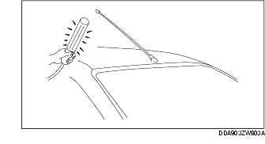

Confirmation step 3: antenna system simple inspection
• Because the antenna system is equipped with a capacitor, the continuity cannot be checked. Therefore proceed to the following simple inspection.
- 1. Turn the AM radio on.
- 2. Tune to the frequency with no broadcast and listen for a buzzing sound.
- 3. Turn a hand-held light on and shake it around the antenna rod (around 10-20 mm)
- 4. If a whirring sound from the speaker synchronized to the work light movement is confirmed, the antenna system is normal.
- • Use a fluorescent light type for the inspection. Accurate diagnostic cannot be done with an incandescent light.
